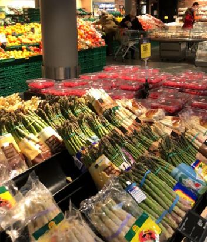
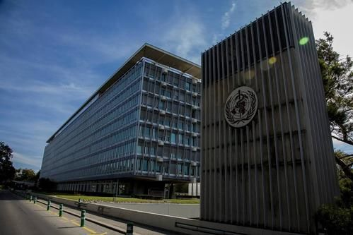

瑞士女议员因戴口罩被赶出议会大厅！如何理解“不戴口罩”的欧洲？
原文链接 备份链接 新冠肺炎疫情期间，少出门、勤洗手、戴口罩已经深深地刻在国人脑子里。不过，在疫情逐渐扩散的欧洲，戴口罩的反而成为异类，可能被“歧视”。 女议员因戴口罩被赶出议会大厅 根据当地时间3月3日18时意大利卫生部公布的最近数据， …
在欧洲人的眼中，没有病症的人戴口罩出门好比穿病号服逛街。
文 | 周 顺
瑞士是和意大利交界边境线最长的国家，从意大利2月21日第一起病例出现，瑞士意大利语区的提契诺州（Ticino）就有民众呼吁关闭边境，但截至3月13日，瑞士才开始了边境管控措施，只是为时已晚。

除了远程办公，生活基本正常
3月20日据瑞士卫生部网站消息，截至当地时间3月20日中午12时，瑞士新冠肺炎累计确诊病例达到4176例，累计死亡43例。从2月25日至今二十多天，确诊病例呈几何数增长。但时至今日，瑞士民众依旧淡定，人们和往常一样享受着日内瓦湖畔明媚春光。和绝大多数欧洲民众一样，大家没有佩戴口罩出门的习惯。在欧洲人的眼中，没有病症的人戴口罩出门好比穿病号服逛街。

瑞士在3月5号正式开始全国通告执行卫生防疫措施，但这些防护建议相对有限，个人防护仅仅倡议勤洗手和避免肢体接触，出现疑似症状建议在家自我隔离，通过电话联系医疗机构进行咨询，这些有限警示只是让自律的瑞士人开始购买消毒洗手液，并没有停止社会和经济活动。

所幸，瑞士良好的医疗体制和设施能够确保病人得到有效救治，3月13日，瑞士联邦政府根据疫情发展，做出了一系列更严格的管控举措。从全欧洲的疫情发展看，瑞士各个联邦州将紧跟邻国，开启抄作业模式。
截至目前瑞士超市还没有出现严重抢购潮，大部分日常食品及用品供应充足，本地居民生活受影响不大。由于提倡远程办公，公共交通工具乘客大幅减少。

数天前，国际媒体普遍报道瑞士医疗物资被扣的新闻，其实只是德瑞海关沟通中所出现的小插曲，一方面是德国早已把医疗物资视作战略储备，另一方面瑞士作为内陆国家，采购物资转运必须经过德法意这些周边近邻，货物转运容易出现协调问题。
但真正令人担忧的，还是瑞士的口罩类防护用品，大量药店处于口罩断货至第三季度，而一旦欧洲疫情继续蔓延，空运可能是未来解决瑞士医疗防护物资调配的唯一途径。

疫情之下，国际奥委会及大批国际机构和企业都已经陆续开始倡议在家远程办公，禁止出差和面对面会晤。欧洲未来发展之路，前途未卜，2020年2月底英国正式脱欧，德国默克尔原定接班人AKK辞职，法国总统马克龙2021年的连任尚不明朗，意大利因为疫情导致经济瘫痪。
新冠病毒的蔓延趋势之快，已经波及2020年全球经济整体下调增长预期，欧洲经济体主要国家所受冲击日趋严重，意大利已超过4万人感染，法国与德国数据持续走高各自感染人数破万，英国突然颁布的抗疫方案，瑞士、荷兰、比利时等国家每天增长人数众多，这将冲击本已风雨飘摇的欧洲经济和全球产品供应链。
3月16日瑞士时间16点，瑞士联邦政府宣布进入国家紧急状态，调用8000军人待命支援医疗体系，法国总统宣布进入战“疫”状态，欧洲历史开启新的一篇。
过去的一个月，从盯着中国到关注意大利
我旅居欧洲20余年，由于家庭和工作原因，常于瑞士、法国、中国三地间往返。
2019年12月下旬由上海返回巴黎和家人团聚过圣诞节，翌日听闻武汉出现不明疫情，顿生一丝焦虑，料想事态不会如2003年的非典事件般恶化，却一语成谶，更不曾料，时至今日疫情已蔓延成全球化状态。
一月初，见几个欧洲媒体期刊对中国疫情的简述，和亲友同事在微信上互报平安，各嘱珍重，想着历经SARS疫情之后的当下医疗科技力量，新疫情会很快被控制。
直至1月23日武汉突然凌晨宣布封城，气氛一下子变得紧张起来。那天晚上8点多，手机跳出新闻提示，再翻看朋友圈里十来条关于武汉封城的信息，不禁猛然惊醒，恍然间疫情已经失控。
欧洲媒体随即铺天盖地的头版头条疫情报道，而接下来的一周时间，眼看着由武汉封城，转为湖北封省，进而全球各大航空公司停航撤侨，2月就这样在惴惴不安中来临了。
2月，瑞士华人社团和中瑞机构筹措资金和防护用品陆续发送至中国，人们不仅讨论因为中国经济的停摆，对全球供应链造成的冲击和巨大影响，同时华人买光瑞士全境口罩也成为了话题。连续三周时间，不断接到求购医疗物资的信息，却深感无能为力，药店超市防护口罩全部无货，交通物流航路全部暂停，只能通过微信电话与亲朋好友相互叮嘱鼓励。

随着时间转向2月下旬，人们的视线渐渐从中国境内疫情，慢慢转到了“钻石公主号”、韩国本土疫情，以及意大利疫情上。
瑞士是最早开始关注中国疫情发展的欧洲国家之一，世卫组织WHO就坐落在日内瓦，关乎全球疫情的讯息都源于此地；瑞士驻华商会也多次组织跨境视频会议，探讨疫情之下如何解决生产复工问题。


新民周刊所有平台稿件， 未经正式授权
一律不得转载、出版、改编或进行
与新民周刊版权相关的其他行为，违者必究


原文链接 备份链接 新冠肺炎疫情期间，少出门、勤洗手、戴口罩已经深深地刻在国人脑子里。不过，在疫情逐渐扩散的欧洲，戴口罩的反而成为异类，可能被“歧视”。 女议员因戴口罩被赶出议会大厅 根据当地时间3月3日18时意大利卫生部公布的最近数据， …
原文链接 备份链接 医护人员冲锋在一线有需要，我们国企和其他企业就要一起做好后勤保障工作，挑起企业抗击疫情的责任担当，相信众志成城、共克时艰不是一句空话，大家一起努力，疫情终将过去，一切都会好起来。 口述 | 周 道 整理 | 周 洁 小 …
原文链接 备份链接 疫情暴发之初，在欧洲的中国留学生普遍比较平静。随着疫情在欧洲迅速蔓延，留学生们就算“确有回国需求”，也很难立即回来，直航纷纷取消，转机充满变数，包机需要审批，既然暂时回不来，那就只能留下来继续抗疫 文 |《财经》记者 …
原文链接 备份链接 我不太确定学校停课的时间会不会继续延长。因为我们在群里对此次意大利疫情的预测是不太乐观的。 记 者 | 应 琛 受访者 | 王艺林 上午在宿舍自习完之后，我习惯性地打开新闻网站了解当天意大利新冠肺炎疫情的最新情况。我 …
原文链接 备份链接 本 文 约 3700 字 阅 读 需 要 8 min 在本文的开头，首先有必要让读者明白，作者的讲述绝非完全可信。 我在意大利住了十多年，又是媒体记者，这次意大利疫情爆发以后，很多媒体都来找我，甚至有人愿意出丰厚的稿 …